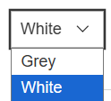
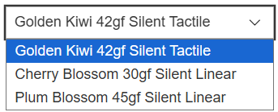

MoErgo Go60
- Pris
- Kun tastatur - $300 (2 850 kr)
- Med håndflatestøtte - $420 (3 975 kr)
- Jeg ønsker meg varianten med håndflatestøtte mest (går fint uten 🙃)
- Man kan kjøpe håndflatestøtten som en seperat vare i nettbutikken
Butikk

Videoreferanse

Konfigurasjoner
Velg "White"

Velg "Golden Kiwi 42gf Silent Tactile"

Hvorfor delt tastatur?
Jeg eier allerede et veldig godt gamingtastatur (Apex Pro Mini). Til programmering og lengre tekster synes jeg likevel ikke det fungerer veldig godt. Go60 ønsker jeg meg som et arbeidsverktøy til lekser, koding og prøver der eget tastatur er tillatt.
Tastaturet er delt i to, slik at jeg kan plassere hver del der hendene naturlig hviler. Det gir flere muligheter til å finne en avslappet skrivestilling når jeg jobber lenge, i stedet for at begge hendene må tilpasses ett fast tastatur.
Jeg har lært touchmetoden, altså å skrive uten å se på tastene, og vil bygge videre på det. Jeg tror Go60 kan bli en stor oppgradering for arbeidet jeg gjør på skolen og hjemme, selv om det nye oppsettet vil kreve litt øvelse og tilvenning.